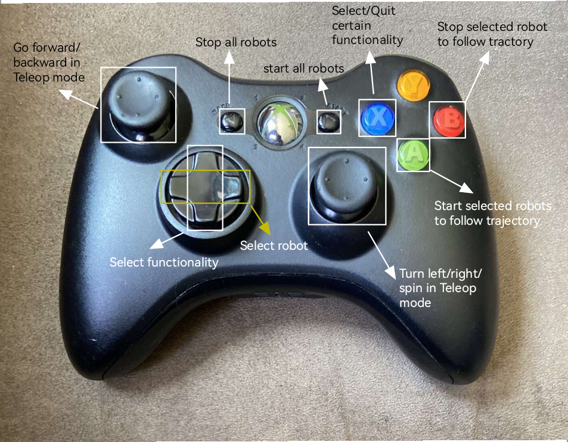

Usage
This page describes the available programs for the robots: The Universal Menu Interface, the Teleoperation Control via Joystick and the Trajectory Following with or without MoCap.
Menu
The menu functionality allows you to use different control modalities for the robots. You can navigate it using an Xbox controller and the command line output of your terminal.
-
Use the setup process described in Quickstart.
-
Use the buttons on the joystick to select different functionalities.

Controller Mapping
Robot Selection & Program Management
- D-Pad Left/Right: Select robot (cycles through robots 1-4)
- D-Pad Up/Down: Select program for current robot
- X-Button: Confirm program selection and send to robot
Robot Control
- A Button: Start selected robot with chosen program
- B Button: Stop selected robot
- X Button: Send program to robot OR quit current program
- START Button: Start ALL robots simultaneously
- BACK Button: Stops ALL robots (emergency stop)
Note: When stopping the robot, the program must be QUIT for each robot with the X button, before starting a program again.
Teleop Control
- Left Stick: Control selected robot when in teleop mode
- Vertical axis: Linear velocity (forward/backward)
- Right Stick: Steering control
- Horizontal axis: Steering angle (left/right)
Available Programs
- Teleop: Manual teleoperation mode (immediate control)
- Trajectory Following (Direct Duty): Follows pre-programmed trajectories with direct motor control
- Trajectory Following (MoCap): Follows trajectories using motion capture feedback (using position controller and speedcontrol)
Usage Workflow
- Select Robot: Use D-Pad Left/Right to choose which robot to control
- Choose Program: Use D-Pad Up/Down to select the desired program
- Send Program: Press X button to send the program to the robot
- Start Execution: Press A button to start the program
-
Control/Monitor:
- For teleop: Use left stick to control the robot
- For trajectories: Robot executes automatically
-
Stop: Press B to stop individual robot or BACK for emergency stop
Tele-Operation for multiple robots
In addition to the controller interface node with the menu, there is another node that provides tele-operation functionality for multiple robots, that can be controlled simultaneously with one controller for each robot respectively.
Hardware Requirements
- Xbox controller (wired or wireless with USB adapter)
- Compatible joystick device recognized by
joy_linux
Setup Steps
-
Prepare the Robots
- Prepare the nRF Dongle and write down the address for the robot(if multiple dongles are running together then each dongle should have different address)
- Connect the Raspberry-Debug-Probe and a USB-C cable to the Pololu as described here.
- Flash the firmware to the robot using the following command:
./run 3pi teleop
-
Prepare the Joystick ROS Node
- Connect a Crazyradio PA or Crazyradio 2 and 1 or more joysticks onto the PC.
- Change the address for each robot in
workstation_ros/src/pololu_ros/config/teleop.yaml. -
Open workstation_ros folder and build the ros2 workspace using:
colcon build source install/setup.bash -
Run the
teleopNode using:ros2 launch pololu_ros teleop_launch.py
Trajectory Following
The trajectory following module allows the robot to follow a predefined trajectory in an closed-loop fashion using external motion tracking. The following docu is based on the Pololu 3pi:
Trajectory Format
For the robot being able to follow the predefined trajectory, the trajectory must follow the format layed out in:
TRAJS/TRJ0001.JSN
The states have the following format:
{
"result": [
{
"time_stamp": 0.0,
"cost": 120.0,
"feasible": 0,
"traj_feas": 0,
"goal_feas": 0,
"start_feas": 0,
"col_feas": 0,
"x_bounds_feas": 0,
"u_bounds_feas": 0,
"start": [],
"goal": [],
"max_jump": -1.0,
"max_collision": -1,
"goal_distance": -1.0,
"start_distance": -1.0,
"x_bound_distance": -1.0,
"u_bound_distance": -1.0,
"num_states": 121,
"states" : [ # the number of states should be one more than the number of actions
[
1.0, # x position in meters
-1.5, # y position in meters
1.57 # yaw in radians
]
],
"actions" : [
[
1.0, # velocity in m/s
0.5 # angular velocity in rad/s
]
],
"dt": 0.1 # time step interval
}
]
}
Motion Capturing
The motion capturing is based on an external system, that uses a ROS topic to publish the captured robot state. In the pololu firmware the the interface node subscribes to this topic and interprets the published states.
To use the motion capturing you need to implement this publisher ROS node. It should publish the robot states in the ROS
geometry_msgs/Poses
format defined in the ROS Documentation.
Execution
-
Prepare the Robots according to the Quickstart manual.
-
Flash the firmware to the robot using the following command:
./run 3pi trajectory_following -
Change the name of the corresponding robot configuration file in folder
cfgtoROBOTCFG.CFGand paste the tuned robot configuration file into a micro sd card. Please DO NOT CHANGE the name of the configuration file, the file system depends on the file name to distinguish configuration file from other files. - Change the trajectory file name to
TRJ0001.JSNand paste it into a micro sd card. Please DO NOT CHANGE the name of the trajectory file, the file system depends on the file name to distinguish trajectory file from other files. - Insert the sd card to the port on the robot.
- Prepare the Trajectory Following ROS Node:
- Connect a Crazyradio PA or Crazyradio 2.
- Change the address for each robot in
workstation_ros/src/pololu_ros/config/mocap_broadcast.yaml. -
Open
workstation_rosfolder and build the ros2 workspace using:colcon build -
Open a terminal and run:
source install/setup.bash ros2 run pololu_ros mocap_broadcast -
Open a new terminal and run:
source install/setup.bash ros2 launch motion_capture_tracking launch.py
-
-
Run Trajectory:
- Put the robot on the correct starting position written in the trajectory file.
- Press
tfor starting the trajectory(for all robots); Presssfor stop(for all robots). - The actual trajectory would be saved in a csv file in the sd card, some plotting function is also provided in folder
datavis. You can use the following command to plot the trajectories and part of the error w.r.t the given trajectory:python3 my_display.py path/to/your/csv
-
Notice for Rerunning the Trajectory:
- If the robot is taken out of the flightspace then the 2 ros processes should be restarted.
- Restart the robot manually so that the trajectory csv will not be overwritten.